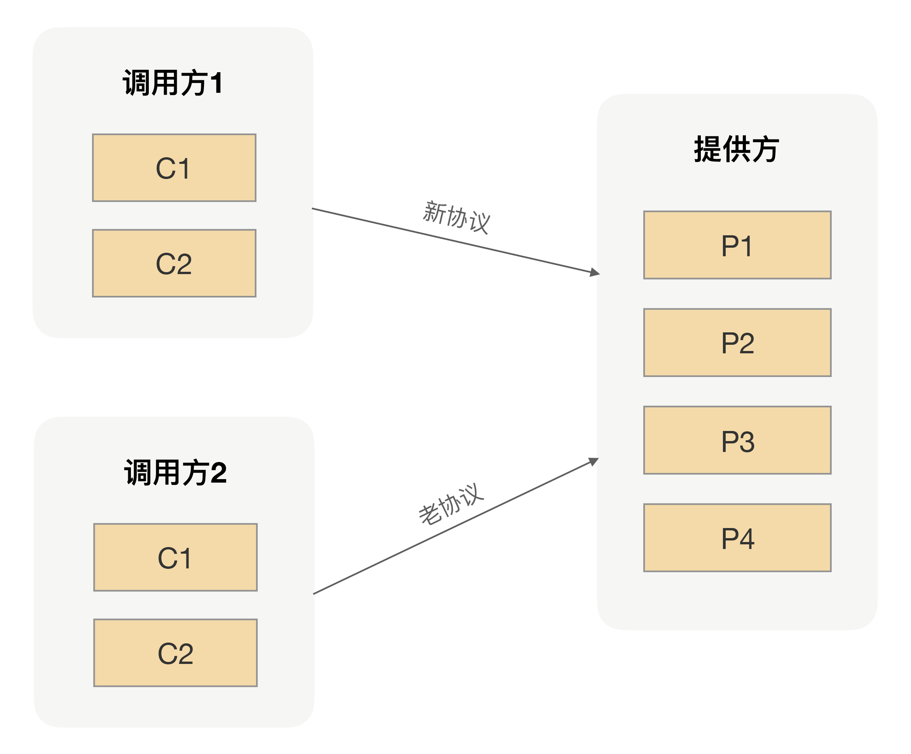
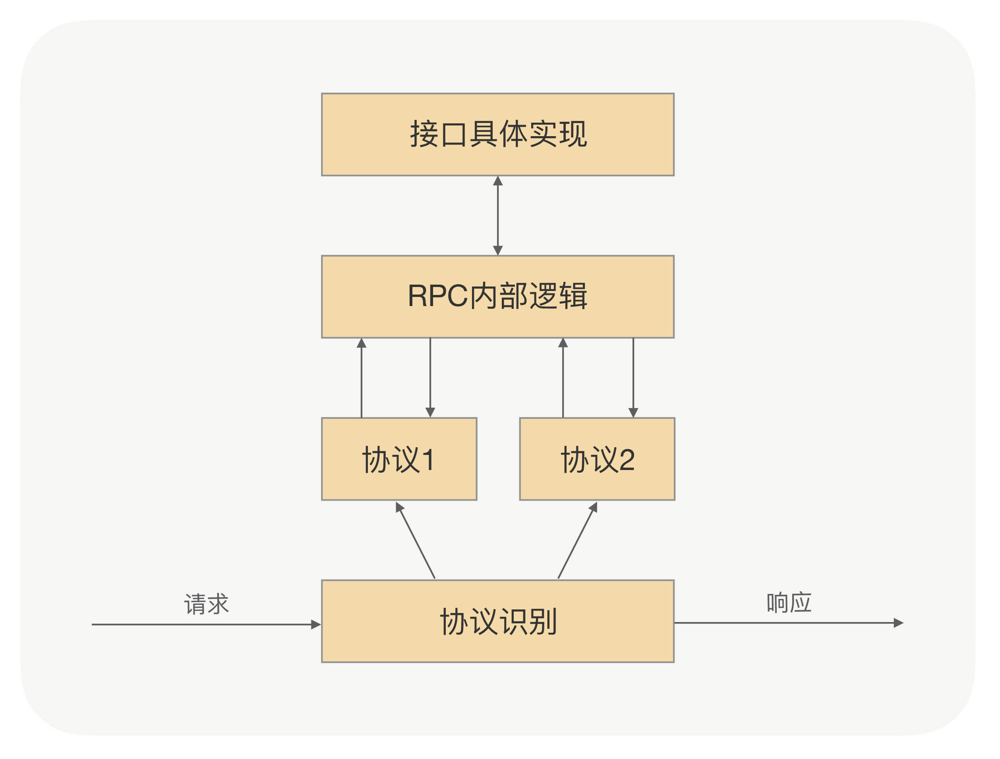

- 00 开篇词 别老想着怎么用好RPC框架，你得多花时间琢磨原理.md.html
- 01 核心原理：能否画张图解释下RPC的通信流程？.md.html
- 02 协议：怎么设计可扩展且向后兼容的协议？.md.html
- 03 序列化：对象怎么在网络中传输？.md.html
- 04 网络通信：RPC框架在网络通信上更倾向于哪种网络IO模型？.md.html
- 05 动态代理：面向接口编程，屏蔽RPC处理流程.md.html
- 06 RPC实战：剖析gRPC源码，动手实现一个完整的RPC.md.html
- 07 架构设计：设计一个灵活的RPC框架.md.html
- 08 服务发现：到底是要CP还是AP？.md.html
- 09 健康检测：这个节点都挂了，为啥还要疯狂发请求？.md.html
- 10 路由策略：怎么让请求按照设定的规则发到不同的节点上？.md.html
- 11 负载均衡：节点负载差距这么大，为什么收到的流量还一样？.md.html
- 12 异常重试：在约定时间内安全可靠地重试.md.html
- 13 优雅关闭：如何避免服务停机带来的业务损失？.md.html
- 14 优雅启动：如何避免流量打到没有启动完成的节点？.md.html
- 15 熔断限流：业务如何实现自我保护_.md.html
- 16 业务分组：如何隔离流量？.md.html
- 17 异步RPC：压榨单机吞吐量.md.html
- 18 安全体系：如何建立可靠的安全体系？.md.html
- 19 分布式环境下如何快速定位问题？.md.html
- 20 详解时钟轮在RPC中的应用.md.html
- 21 流量回放：保障业务技术升级的神器.md.html
- 22 动态分组：超高效实现秒级扩缩容.md.html
- 23 如何在没有接口的情况下进行RPC调用？.md.html
- 24 如何在线上环境里兼容多种RPC协议？.md.html
- 加餐 RPC框架代码实例详解.md.html
- 加餐 谈谈我所经历过的RPC.md.html
- 答疑课堂 基础篇与进阶篇思考题答案合集.md.html
- 结束语 学会从优秀项目的源代码中挖掘知识.md.html
- 捐赠
24 如何在线上环境里兼容多种RPC协议？
你好，我是何小锋。上一讲我们学习了如何在没有接口的情况下完成RPC调用，其关键在于你要理解接口定义在RPC里面的作用。除了我们前面说的，动态代理生成的过程中需要用到接口定义，剩余的其它过程中接口的定义只是被当作元数据来使用，而动态代理在RPC中并不是一个必须的环节，所以在没有接口定义的情况下我们同样也是可以完成RPC调用的。
回顾完上一讲的重点，咱们就言归正传，切入今天的主题，一起看看如何在线上环境里兼容多种RPC协议。
看到这个问题后，可能你的第一反应就是，在真实环境中为什么会存在多个协议呢？我们说过，RPC是能够帮助我们屏蔽网络编程细节，实现调用远程方法就跟调用本地一样的体验。大白话说就是，RPC是能够帮助我们在开发过程中完成应用之间的通信，而又不需要我们关心具体通信细节的工具。
为什么要支持多协议？
既然应用之间的通信都是通过RPC来完成的，而能够完成RPC通信的工具有很多，比如像Web Service、Hessian、gRPC等都可以用来充当RPC使用。这些不同的RPC框架都是随着互联网技术的发展而慢慢涌现出来的，而这些RPC框架可能在不同时期会被我们引入到不同的项目中解决当时应用之间的通信问题，这样就导致我们线上的生成环境中存在各种各样的RPC框架。
很显然，这种混乱使用RPC框架的方式肯定不利于公司技术栈的管理，最明显的一个特点就是我们维护RPC框架的成本越来越高，因为每种RPC框架都需要有专人去负责升级维护。
为了解决早期遗留的一些技术负债，我们通常会去选择更高级的、更好用的工具来解决，治理RPC框架混乱的问题也是一样。为了解决同时维护多个RPC框架的困难，我们肯定希望能够用统一用一种RPC框架来替代线上所有的RPC框架，这样不仅能降低我们的维护成本，而且还可以让我们在一种RPC上面去精进。
既然目标明确后，我们该如何实施呢？
可能你会说这很简单啊，我们只要把所有的应用都改造成新RPC的使用方式，然后同时上线所有改造后的应用就可以了。如果在团队比较小的情况下，这种断崖式的更新可能确实是最快的方法，但如果是在团队比较大的情况下，要想做到同时上线所有改造后的应用，暂且不讨论这种方式是否存在风险，光从多个团队同一时间上线所有应用来看，这也几乎是一件不可能做到的事儿。
那对于多人团队来说，有什么办法可以让其把多个RPC框架统一到一个工具上呢？我们先看下多人团队在升级过程中所要面临的困难，人数多就意味着要维护的应用会比较多，应用多了之后线上应用之间的调用关系就会相对比较复杂。那这时候如果单纯地把任意一个应用目前使用的RPC框架换成新的RPC框架的话，就需要让所有调用这个应用的调用方去改成新的调用方式。
通过这种自下而上的滚动升级方式，最终是可以让所有的应用都切换到统一的RPC框架上，但是这种升级方式存在一定的局限性，首先要求我们能够清楚地梳理出各个应用之间的调用关系，只有这样，我们才能按部就班地把所有应用都升级到新的RPC框架上；其次要求应用之间的关系不能存在互相调用的情况，最好的情况就是应用之间的调用关系像一颗树，有一定的层次关系。但实际上我们应用的调用关系可能已经变成了网状结构，这时候想再按照这种方式去推进升级的话，就可能寸步难行了。
为了解决上面升级过程中遇到的问题，你可能还会想到另外一个方案，那就是在应用升级的过程中，先不移除原有的RPC框架，但同时接入新的RPC框架，让两种RPC同时提供服务，然后等所有的应用都接入完新的RPC以后，再让所有的应用逐步接入到新的RPC上。这样既解决了上面存在的问题，同时也可以让所有的应用都能无序地升级到统一的RPC框架上。
在保持原有RPC使用方式不变的情况下，同时引入新的RPC框架的思路，是可以让所有的应用最终都能升级到我们想要升级的RPC上，但对于开发人员来说，这样切换成本还是有点儿高，整个过程最少需要两次上线才能彻底地把应用里面的旧RPC都切换成新RPC。
那有没有更好的方式可以让应用上线一次就可以完成新老RPC的切换呢？关键就在于要让新的RPC能同时支持多种RPC调用，当一个调用方切换到新的RPC之后，调用方和服务提供方之间就可以用新的协议完成调用；当调用方还是用老的RPC进行调用的话，调用方和服务提供方之间就继续沿用老的协议完成调用。对于服务提供方来说，所要处理的请求关系如下图所示：

怎么优雅处理多协议？
要让新的RPC同时支持多种RPC调用，关键就在于要让新的RPC能够原地支持多种协议的请求。怎么才能做到？在[第 02 讲] 我们说过，协议的作用就是用于分割二进制数据流。每种协议约定的数据包格式是不一样的，而且每种协议开头都有一个协议编码，我们一般叫做magic number。
当RPC收到了数据包后，我们可以先解析出magic number来。获取到magic number后，我们就很容易地找到对应协议的数据格式，然后用对应协议的数据格式去解析收到的二进制数据包。
协议解析过程就是把一连串的二进制数据变成一个RPC内部对象，但这个对象一般是跟协议相关的，所以为了能让RPC内部处理起来更加方便，我们一般都会把这个协议相关的对象转成一个跟协议无关的RPC对象。这是因为在RPC流程中，当服务提供方收到反序列化后的请求的时候，我们需要根据当前请求的参数找到对应接口的实现类去完成真正的方法调用。如果这个请求参数是跟协议相关的话，那后续RPC的整个处理逻辑就会变得很复杂。
当完成了真正的方法调用以后，RPC返回的也是一个跟协议无关的通用对象，所以在真正往调用方写回数据的时候，我们同样需要完成一个对象转换的逻辑，只不过这时候是把通用对象转成协议相关的对象。
在收发数据包的时候，我们通过两次转换实现RPC内部的处理逻辑跟协议无关，同时保证调用方收到的数据格式跟调用请求过来的数据格式是一样的。整个流程如下图所示：

总结
在我们日常开发的过程中，最难的环节不是从0到1完成一个新应用的开发，而是把一个老应用通过架构升级完成从70分到80分的跳跃。因为在老应用升级的过程中，我们不仅需要考虑既有的功能逻辑，也需要考虑切换到新架构上的成本，这就要求我们在设计新架构的时候要考虑如何让老应用能够平滑地升级，就像在RPC里面支持多协议一样。
在RPC里面支持多协议，不仅能让我们更从容地推进应用RPC的升级，还能为未来在RPC里面扩展新协议奠定一个良好的基础。所以我们平时在设计应用架构的时候，不仅要考虑应用自身功能的完整性，还需要考虑应用的可运维性，以及是否能平滑升级等一些软性能力。
课后思考
在RPC里面支持多协议的时候，有一个关键点就是能够识别出不同的协议，并且根据不同的magic number找到不同协议的解析逻辑。如果线上协议存在很多种的话，就需要我们事先在RPC里面内置各种协议，但通过枚举的方式可能会遗漏，不知道针对这种问题你有什么好的办法吗？
欢迎留言和我分享你的答案，也欢迎你把文章分享给你的朋友，邀请他加入学习。我们下节课再见！
© 2019 - 2023 Liangliang Lee. Powered by gin and hexo-theme-book.